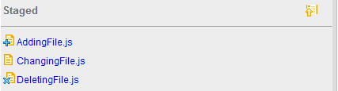

The Git Status page provides a summary of the current state of a Git clone associated with your Orion account. This page shows changes in your working tree, staged changes that are ready to commit, and a summary of the current contents of the local and remote tracking branches. The title area indicates the repository and branch name you are currently viewing. Commands available on staged or unstaged files are shown to the right of each file when you hover over it.
Excluding the conflicting cases, there are three types of changes: adding, changing and deleting. The types of changes are indicated by icons on the left of the files.

Click any staged or unstaged change to open a comparison between the working copy and the state of that file in the most recent commit. You can also open a separate Compare page by clicking the Side by side compare button to the right of the file name. The compare page allows you to merge changes or perform further edits on your uncommitted changes.
Hover over any unstaged change to pop up all available action icons. Then hover over the first action. You will see the tool tip as stage.

Click on the action to stage the change. The change is shown in the staged area.

From the top-right corner of the unstaged area, you can also click on the stage all action to stage all the changes.

This document is maintained in a collaborative wiki. If you wish to update or modify this document please visit http://wiki.eclipse.org/Orion/Documentation/User_Guide/Reference/Git_Status_page